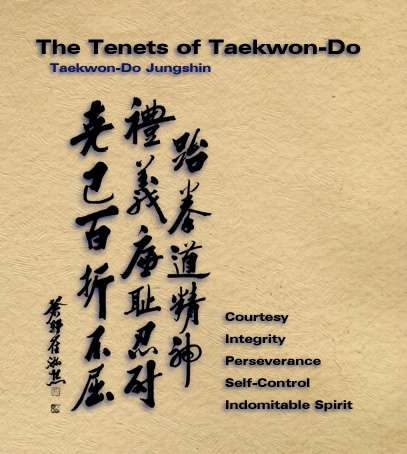

Tenets of Taekwon-Do and The Student Oath
Taekwon-Do students should attempt to be polite to one another and to respect others. Students should address instructors as Sir and to bow to the instructors before and after classes. Turning up early or on time for classes is also an aspect of courtesy.
One who has integrity is able to define what is right or wrong and have the conscience, if wrong, to feel guilt. Taekwon-Do students should strive to be honest and to live by moral principles.
Perseverance means having patience. One of the most important secrets of becoming a leader in Taekwon-Do is to overcome every difficulty by perseverance. Confucius said," One who is impatient in trivial matters can seldom achieve success in matters of great importance."
Without self-control, a Taekwon-Do student is just like any fighter in the street. Loss of self-control is disastrous both in sparring and personal affairs. "The term of stronger is the person who wins over oneself rather than someone else", Lao Tzu.
A true student of Taekwon-Do will never give up, not even when faced with insurmountable odds. The most difficult goals can be achieved with indomitable spirit.